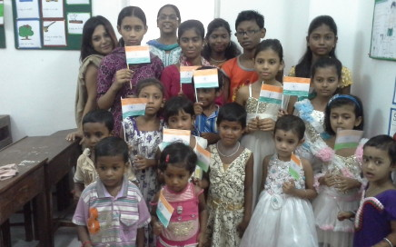

Learning Centre has been started for children in the age group from 4 years to 14 years at Kolkata, West Bengal.
Activity cum learning centres for children have been setup for out of school children, drop-outs and other children of economically weaker sections in Kolkata, West Bengal. These centres are equipped with instructors and teachers who impart learning in a play-way method, with an attempt to mainstream children in regular school. Nurturing talents in sports, arts, improving communication skills, leadership and personality development, and value based education are the key elements of the programme.
Currently at the Calcutta centre around 30 children come on a daily basis and there is one lead instructor with an assistant instructor qualified to teach young children.

The teaching is provided free of cost and children are also provided with free stationary like text –books, note books, drawing books, paints and crayons. Apart from the basic teaching, emphasis is given on value based education through story –telling, teaching in play way method, encouraging sports, etc. Footballs, badminton rackets, and other sports materials have been provided to the children and teachers have developed interest of children to come regularly to the centre by involving them through sports and other activities organized from time to time.
Progress of each child is evaluated on a regular basis, and parents are involved in different programmes so that they also understand the importance of education in the lives of the younger generation.
As a result of these efforts a number of children who had never been enrolled in school or those who were drop outs have started coming to the learning centre on a regular basis and have shown tremendous improvement in learning outcomes. Those studying in nearby government school are provided with support of remedial education so that they perform to the best of their ability. Talent hunt is done to identify children who have special talents in a particular field and they are nurtured to develop the same through close guidance and mentoring support by our trainers cum other resource persons.